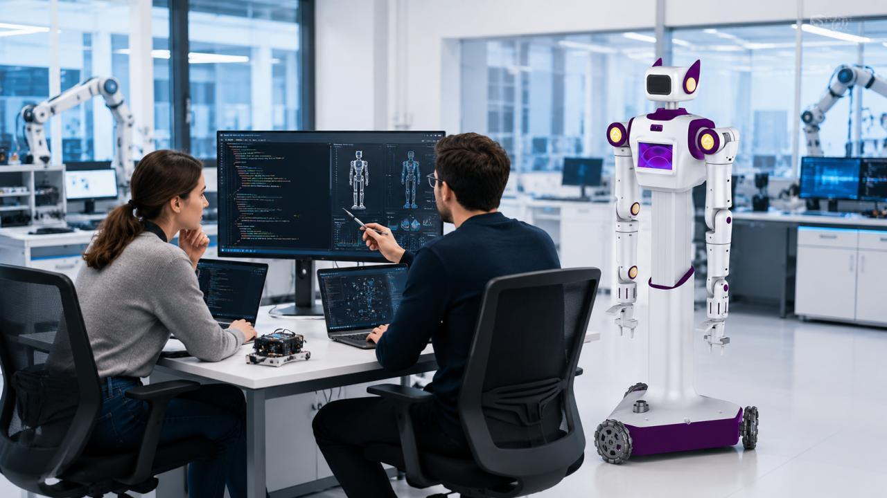
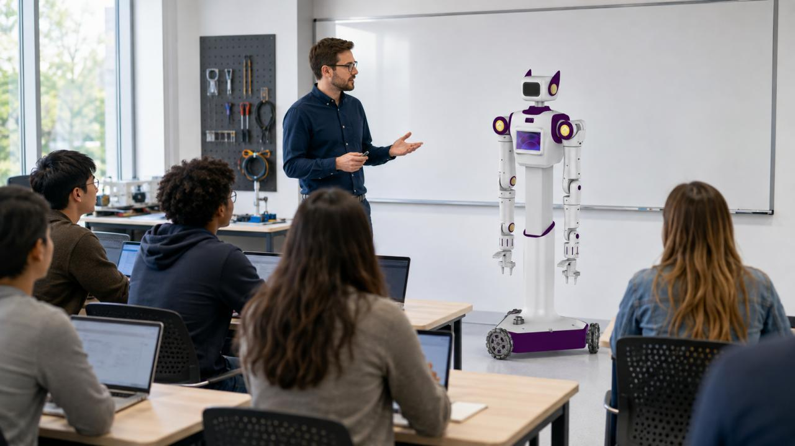
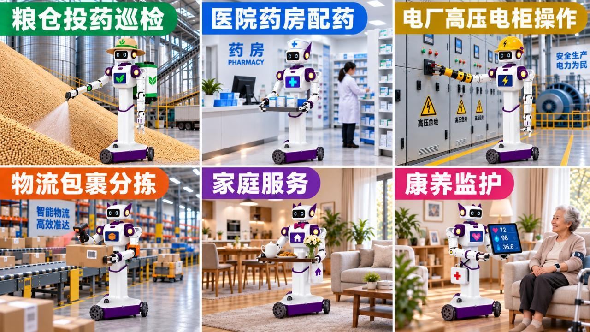

跨本体数据生成
统一多源操作数据，支持虚实协同与跨本体迁移，沉淀可复用的高质量数据资产。
DATA ENGINE以具身机器人为载体，贯通数据采集、模型训练与部署验证。面向科研教育和产业场景，提供可复用、可扩展的具身智能基础设施。

01 / OUR APPROACH
“新纪”具身智能生态平台，以机器人本体、数据与模型为底座，连接科研机构、开发者与产业伙伴，让技术验证、能力复用和场景落地发生在同一套体系中。
02 / EI-STACK
覆盖从数据生成到群体协作的核心链路，为具身智能应用提供持续进化的能力底座。
统一多源操作数据，支持虚实协同与跨本体迁移，沉淀可复用的高质量数据资产。
DATA ENGINE贯通视觉感知、状态预演和动作生成，构建可组合、可迁移的机器人技能库。
MODEL ENGINE面向异构机器人进行任务分配、无冲突规划与扰动下的在线重调度。
COLLABORATION让技能与经验持续沉淀，实现长程任务规划、效果评估与策略迭代。
KNOWLEDGE BASE
DASHENG / STANDARD03 / ROBOT PLATFORM
面向高校、科研团队、开发者和行业客户的 EI-Stack 轮式人形机器人。
从底层控制到模型部署，覆盖运动控制、感知理解、双臂操作、自主导航和多模态数据采集。既能开箱验证，也能用于二次开发与场景定制。
04 / APPLICATIONS
从科研教学走向工业能源与科学实验室，让具身智能围绕真实任务持续验证。

巡检、识读、阀门操作与复杂环境任务
构建跨学科实验平台，服务算法验证与机器人科研。
探索方案 ↗覆盖课程、教材、仿真、真机任务和师资培训。
了解体系 ↗06 / INSIGHTS
READY TO BUILD THE FUTURE?